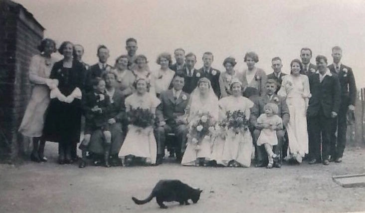

Emily Edith Gilbert (née Cowell) 1912 - 1981
[ Home ] | [ Calendar ] | [ Surnames Index ] | [ Errors ] | [ Family History ]The child of James Cowell (a seaman collier with the whitstable shipping company) and Emily Lawrence, Emily Cowell, the aunt of Nigel Horne, was born in Ramsgate, Kent, England on 16 May 19121,2,3,4,5 and married Albert Gilbert (a house painter with whom she had 2 children: Rex Albert Frederick and Philip Leonard, along with 1 surviving child) in Thanet, Kent, England around Feb 19356.
During her life, she was living at 7 Pouces Cottages, Minster in Thanet on 19 Jun 19211; and at 12 Hertford Road, Margate, Kent on 29 Sept 19398 and in 19657.
She died on 12 Sept 1981 in Margate, Kent, England3,4.
Parents
- James Frederick was born on 2 Mar 1887
- Emily Jane was born on 30 Sept 1887
Children
- Rex Albert Frederick was born on 28 Apr 1942
Citations
- 1921 Census Of England & Wales - Findmypast (was age 9 and the daughter of the head of the household)
- England & Wales births 1837-2006 - Findmypast
- England & Wales deaths 1837-2007 - Findmypast
- England & Wales, Death Index: 1984-2005 Online publication - Provo, UT, USA: The Generations Network, Inc., 2007.Original data - General Register Office. England and Wales Civil Registration Indexes. London, England: General Register Office. © Crown copyright. Published by permission of the Cont
- England & Wales, FreeBMD Birth Index, 1837-1915 Online publication - Provo, UT, USA: The Generations Network, Inc., 2006.Original data - General Register Office. England and Wales Civil Registration Indexes. London, England: General Register Office. © Crown copyright. Published by permission of the Cont
- England & Wales, Marriage Index: 1916-2005 Online publication - Provo, UT, USA: The Generations Network, Inc., 2009.Original data - General Register Office. England and Wales Civil Registration Indexes. London, England: General Register Office. © Crown copyright. Published by permission of the Cont
- 1965 Kelly's Directory
- 1939 Register - Findmypast (was the wife of the head of the household)
Media
Emily Cowell - 3

Emily Cowell
Emily Cowell - 2
Emily Cowell - Albert Gilbert - wedding

Emily and Joyce Cowell

Emily Cowell - Freda Cowell

Emily Cowell - 4
1965 Kelly's Thanet Directory

1965 Kelly's Thanet Directory
England & Wales births 1837-2006 - BMD/B/1912/2/AZ/000303/036
1939 Register Transcription - TNA-R39-1756-1756C-014-25
England & Wales marriages 1837-2008 - BMD/M/1935/1/AZ/000166/024
England & Wales deaths 1837-2007 - BMD/D/1981/3/AZ/000372/137
Family Tree

Map
Generated by ged2site. Last updated on Jul 3, 2024
Known Issues
May have been living with mother on 19 Jun 1921, but the addresses don't match or aren't detailed enough to be sure